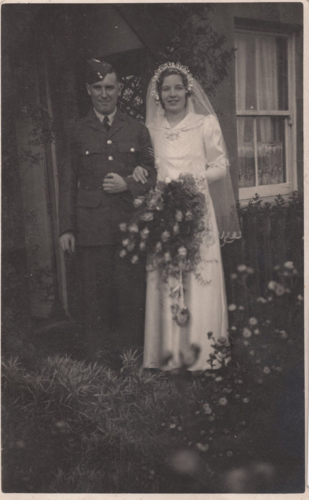
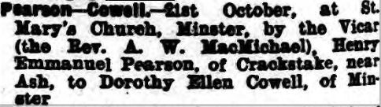
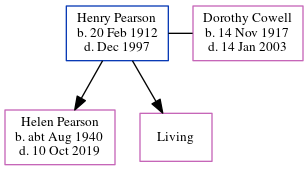

Henry Manuel Pearson 1912 - 1997
[ Home ] | [ Calendar ] | [ Surnames Index ] | [ Errors ] | [ Family History ]Henry Pearson, the husband of Dorothy Helen Cowell (the aunt of Nigel Horne), was born in York, North Yorkshire, England on 20 Feb 19121,2,3 and married Dorothy (with whom he had 2 children: Helen Anne and Jill, along with 1 surviving child) at St Mary's Church, Minster, Thanet, Kent, England on 21 Oct 19394. In 1965, he was living at 3 Laundry Road, Minster in Thanet5.
He died in Dec 1997 in Thanet2 (age: 85).
Children
- Helen Anne was born c. Aug 1940
Citations
- England & Wales deaths 1837-2007 - Findmypast
- England & Wales, Death Index: 1984-2005 Online publication - Provo, UT, USA: The Generations Network, Inc., 2007.Original data - General Register Office. England and Wales Civil Registration Indexes. London, England: General Register Office. © Crown copyright. Published by permission of the Cont
- England & Wales, FreeBMD Birth Index, 1837-1915 Online publication - Provo, UT, USA: The Generations Network, Inc., 2006.Original data - General Register Office. England and Wales Civil Registration Indexes. London, England: General Register Office. © Crown copyright. Published by permission of the Cont
- England & Wales, Marriage Index: 1916-2005 Online publication - Provo, UT, USA: The Generations Network, Inc., 2009.Original data - General Register Office. England and Wales Civil Registration Indexes. London, England: General Register Office. © Crown copyright. Published by permission of the Cont
- 1965 Kelly's Thanet Directory
Media
Dorothy Cowell - Henry Pearson - marriage

Thanet Advertiser 27 Oct 1939

1965 Kelly's Thanet Directory

England & Wales marriages 1837-2008 - BMD/M/1939/4/AO/000391/014
England & Wales marriages 1837-2008 - BMD/M/1939/4/PZ/000037/100
England & Wales deaths 1837-2007 - BMD/D/1997/12/82135368
England & Wales births 1837-2006 - BMD/B/1912/1/AZ/001053/016
Family Tree
Map
Generated by ged2site. Last updated on Jul 3, 2024
Known Issues
No records of living with anyone
1939 UK register information missing